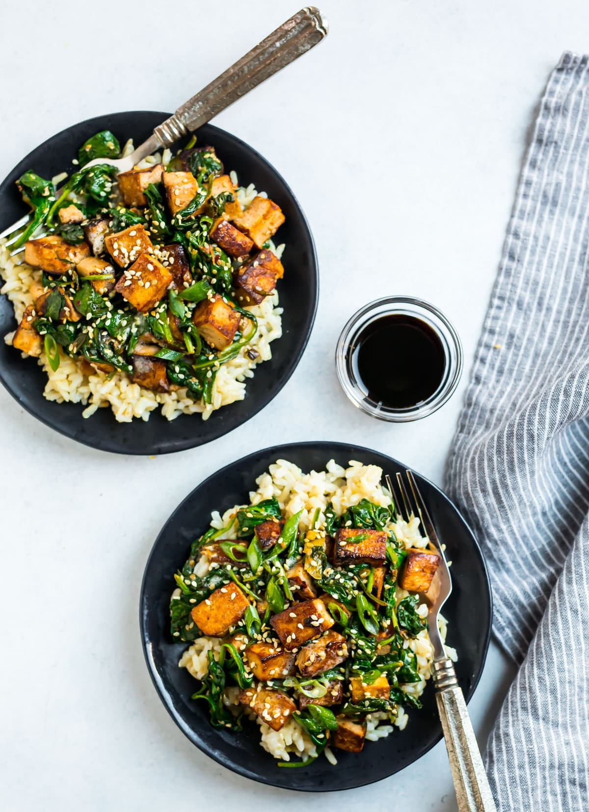

Stir Fry

Description
Stir frying (Chinese: 炒; pinyin: chǎo) is a Chinese cooking technique in which ingredients are fried in a small amount of very hot oil while being stirred or tossed in a wok. The technique originated in China and in recent centuries has spread into other parts of Asia and the West. It is similar to sautéing in Western cooking technique.
Ingredients
- 2 (14-ounce) packages extra-firm tofu
- 1 tablespoon canola oil or grapeseed oil
- 3 tablespoons low-sodium soy sauce
- 3 large garlic cloves
- 1 small bunch green onions
- 1 tablespoon minced fresh ginger
- 1-2 teaspoons fresh chili paste (sambal oelek)
- 10 ounces baby spinach
- 2 tablespoons toasted sesame seeds
- 2 teaspoons sesame oil
Steps
- Drain the tofu. Wrap each block in a double layer of paper towels and pat dry, pressing down on the tofu lightly to squeeze out excess moisture. Cut the tofu into 3/4-inch cubes.
- in a large nonstick skillet or wok, heat the canola oil over medium-high heat. Once the oil is hot but not smoking, add the tofu (be careful, as the oil will splatter a little bit) and drizzle with 1 tablespoon soy sauce. Sauté, stirring every minute or so until the tofu is nicely colored on all sides and the moisture has cooked off, about 8 to 10 minutes. Don't feel that you need to stir constantly. Sitting for a while on one side is what will allow the tofu to brown. Add the garlic, roughly two-thirds of the green onion, ginger, chili paste, and the remaining 2 tablespoons soy sauce. Stir and cook until fragrant, about 1 minute.
- Add several large handfuls of spinach, stirring as you go so that it wilts and you can fit more in the pan. Once the first addition has wilted, continue to add and wilt the spinach by handfuls, until all of the spinach is added. It will seem like a ridiculous amount at first but will cook down considerably. Stir in the sesame seeds. Stir in the sesame oil. Remove from the heat. Sprinkle the reserved green onions over the top. Serve hot, with brown rice, noodles, or whatever you like, along with a few dashes of additional soy sauce and chili paste or flakes to taste.
HOME PAGE